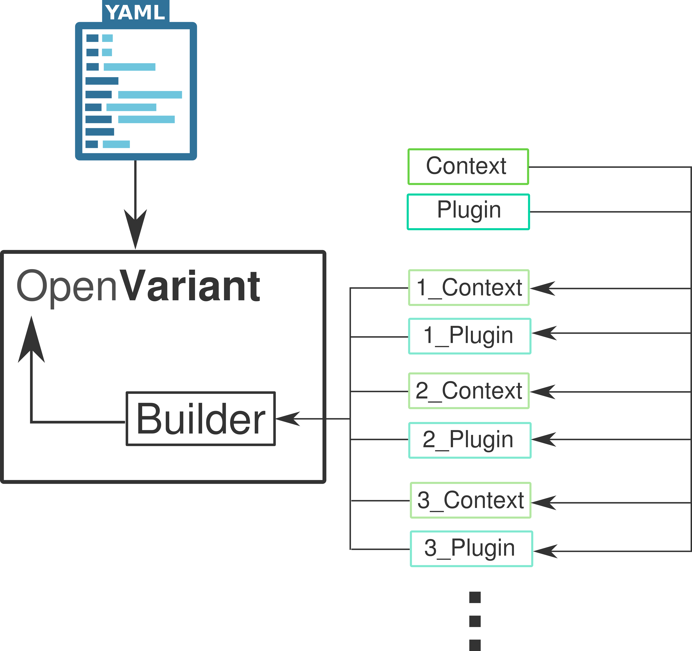

Plugin system#
We designed a plugin system where the user will be able to create and add any kind of data transformation. Each plugin has to be noticed on the annotation file as Annotation structure section explains, if it wants to be used. An OpenVariant’s plugin is a python module composed of a single file. This file has two classes:
Context: contains different attributes of the row and the file that is parsed (
row,field_name,file_path). It is used as input argument that runs the plugin’s functionality.Plugin: has
runfunction that will process the row and apply the data transformation.
Each object will be working as a single base class to be inherited on each plugin. On the following schema we can visualize how the different classes are connected and composed with OpenVariant package.
{kind=link}
As we have mentioned before, the plugin has to be present on the annotation file in order to be used. Plugins can be distributed on different folders where Builder will manage to find them and apply the data transformation. Plugins will inherit Context and Plugin as base classes for each plugin. These classes are described as it follows:
Context
class Context(object):
"""Base class that each context must inherit from"""
def __init__(self, row: dict, field_name: str, file_path: str) -> None:
self._row = row
self._field_name = field_name
self._file_path = file_path
@property
def row(self) -> dict:
return self._row
@property
def field_name(self) -> str:
return self._field_name
@property
def file_path(self) -> str:
return self._file_path
Plugin
class Plugin(object):
"""Base class that each plugin must inherit from"""
def run(self, argument):
"""
This is a main function (required) which OpenVariant will call every time that this plugin is
described in an annotation file.
"""
raise NotImplementedError
Check Command-line interface (CLI) to know how to create a new plugin. Also, to check more examples on how plugins can be applied and written, see Plugin examples.